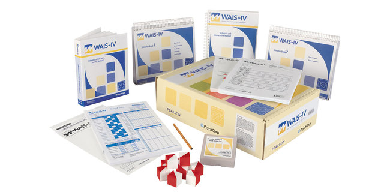
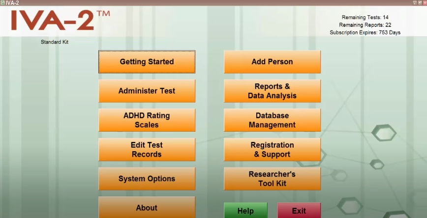
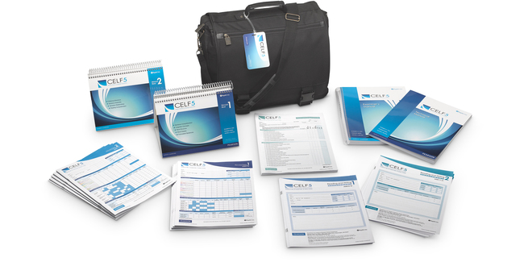
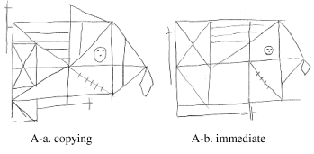
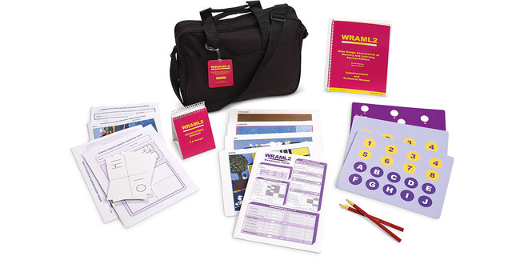
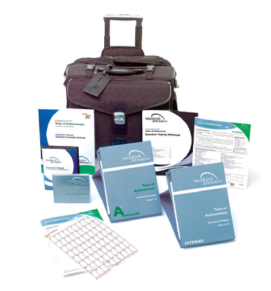

Intellectual Functioning
The Wechsler Adult Intelligence Scale-IV (WAIS-IV) is the most widely used IQ test, for both adults and older adolescents, in the world. The WAIS-IV is comprised of ten core subtests, which are required to calculate the Full Scale IQ, and five supplemental subtests. The test is broken down into four index scores representing major componenents of intelligence: verbal comprehension, perceptual reasoning, working memory, and processsing speed.
Attention
The Integrated Visual and Auditory (IVA)-2 Continuous Performance Test is commonly used to assess auditory and visual attention and response control functioning in individuals between the ages of 6 and 96. It also includes ADHD parent, teacher, and self-rating scales to help clinicians accurately diagnose ADHD in accordance with DSM-5 guidelines.
Verbal/Language Processing
The Clinical Evaluation of Language Fundamentals (CELF-5) is a flexible battery used to assess semantics, morphology, syntax, and pragmatics for individuals between the ages 5-21. The CELF-5 features structured and authentic tests of language ability (including observational and interactive measures) for a complete picture of the individual's language skills.
Executive Functioning

The Delis-Kaplan Executive Function System (D-KEFS) assesses the key components of executive functions believed to be mediated primarily by the frontal lobe. The D-KEFS is comprised of nine stand-alone subtests, including a stroop task and a task similar to the Tower of Hanoi, allowing examiners to comprehensively assess the key components of executive functions within verbal and spatial modalities.
Visuospatial Processing
The Rey–Osterrieth complex figure test (ROCF) is a neuropsychological assessment in which examinees are asked to reproduce a complicated line drawing, first by copying it freehand (recognition), and then drawing from memory (immediate recall). Appropriate for use with children and adults, the instrument enables clinicians to gather information on major aspects of neuropsychological functioning, not only visuospatial processing.
Memory
The Wide Range Assessment of Memory and Learning (WRAML-2) is a broad-based memory battery that provides a flexible measure of memory functioning and learning. The WRAML2 Core Battery is composed of two verbal, two visual, and two attention/concentration subtests.
Academic Achievement
The Woodcock Johnson IV Tests of Achievement (WJ-IV) is comprised of eleven subtests, broken down into three sections, reading, mathematics, and writing, which assess both academic achievement (what children have learned in school) and cognitive development. They are sometimes paired with an intelligence test to qualify children for gifted and talented programs.